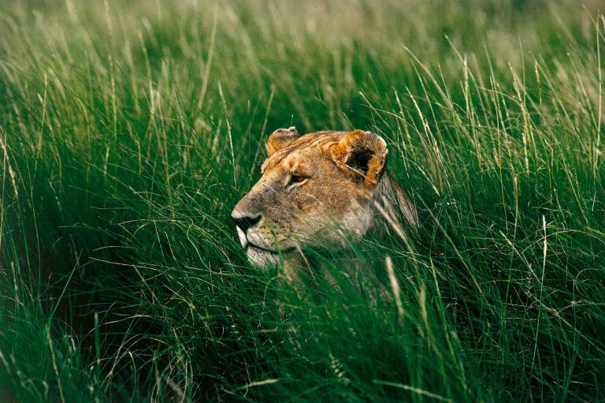

Yann Arthus-Bertrand (Paris, 13 de março de 1946) é um fotógrafo, jornalista, repórter e ambientalista francês. Ele nasceu de uma família de renomados joalheiros, fundada por Claude Arthus-Bertrand e Michel-Ange Marion. Sua irmã Catherine é um de seus colaboradores mais próximos.
Ele se interessou pela natureza e pela vida selvagem ainda na infância.
Originalmente sua especialidade era a fotografia de animais, mas logo a fotografia aérea mudou seu rumo; fez fotografias ao redor do mundo. Publicou mais de 60 livros com suas fotografias feitas em helicópteros e balões.
Seu trabalho foi publicado várias vezes na Revista National Geographic e exibido em diversos países.
Originalmente sua especialidade era a fotografia de animais, mas logo a fotografia aérea mudou seu rumo; fez fotografias ao redor do mundo. Publicou mais de 60 livros com suas fotografias feitas em helicópteros e balões. Seu trabalho
foi publicado várias vezes na Revista National Geographic e exibido em diversos países.

Malévola, Quênia - 1978